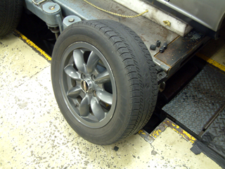
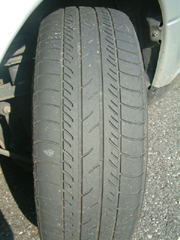
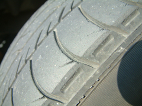
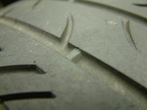
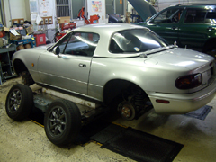
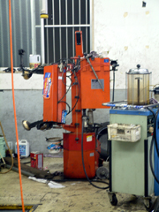
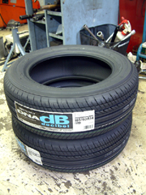
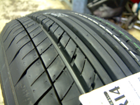
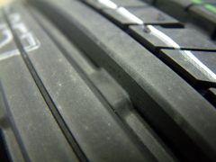
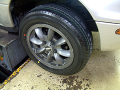

タイヤ交換といっても自分でやったわけではありません。カー用品店で交換してもらいました。タイヤはつくばに来てから１度も交換したことがなかったので、かれこれ３、４年たちます。ガソリンスタンドの点検で×を付けられたのを気に交換しました。どうせ交換するなら違いを試してみたくて、とにかく軟らかそうなのにしてみました。今まで履いていたのはミシュランのMXF2というタイヤで、研究所にいた頃に先輩？に勧められて履いていました。
 |
MXF2のパターン |
 |
かなり磨り減っている。 |
 |
スリップサインの高さと同じくらいまで溝が減っていた。
「こういうのは何分山というんですか？」 店員：「ゼロです・・」 |
 |
タイヤ交換中 |
 |
この機械でタイヤをホイールから抜き取ったり、新しいタイヤをはめ込んだりする。 これは自分じゃできそうにない・・ |
 |
で、新しいタイヤは YOKOHAMAゴムのDNA dB (185/60R14) |
 |
DNA dBのパターンは方向性がある（一方向に向かっている）。 だからローテーションは前後のみでやるらしい。 コンフォート系のタイヤっていうのは溝が細かくてゴムが柔らかい。だから路面の表面の 細かいでこぼこを車に伝えにくい。でも軟らかいから減りも早い。 また、ロードノイズは高周波成分に偏るけど、溝が細かいと溝の数が多いのでランダム パターンによる抑制効果も大きくなって結果的に静かになる。というのでよいのかな・・？ あれ？でも減りの早さに関しては、グリップ重視のRE-01とかは硬いのに早いみたいだな・・ 減り（摩耗速度）は如何にして抑えるのか？？ |
 |
スリップサインが見える位置で今までのタイヤと比べると、如何に減っていたかがわかる。 |
 |
交換完了。 |


で、乗り心地は？というと、かなりよくなった。でもタイヤの性質以前に、磨り減り タイヤから新品になったことが大きい気がする。それでも確かに段差などを越えるときの ショックは和らいだし、ロードノイズも小さくなった。MXF2なのか減ってたからなのか は分からないけれど、前より軟らかいみたい。性質が正反対に位置するPOTENZAのRE-01を 試してみたいのだけど、指で触っても明らかに硬いので、たぶんホイール買って用途に応じて 履き替えるようなことをしないとダメかも・・（用途って何だ？） そしてホイールも買うならやっぱりインチアップして、外径を変えずに扁平率を小さくする。そーすると放熱がよくなって熱ダレしにくくなるのか？熱ダレって誰？でも幅185で内径16インチとかないぞ。205/45ZR16くらいならつくのか？ 研究（注：タイヤの研究ではない）の合間にできるバイトください。
ｂｙ すすたわり